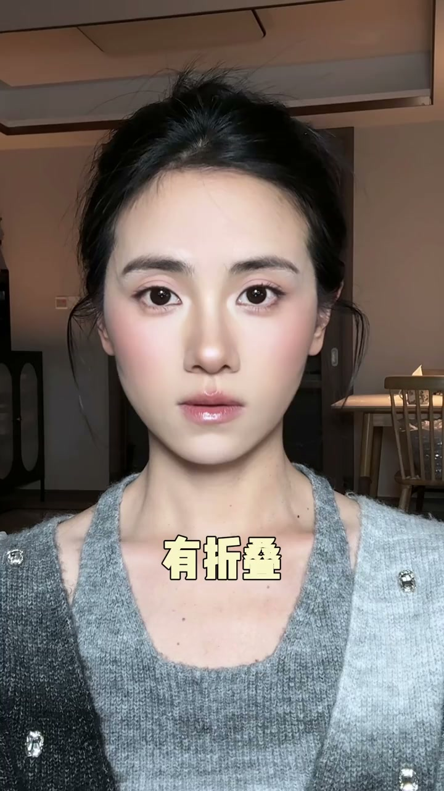
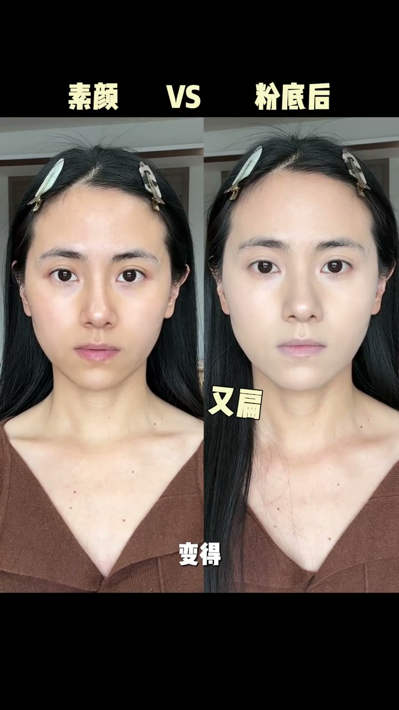
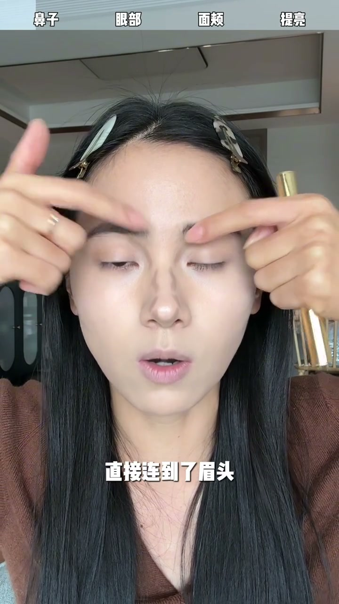
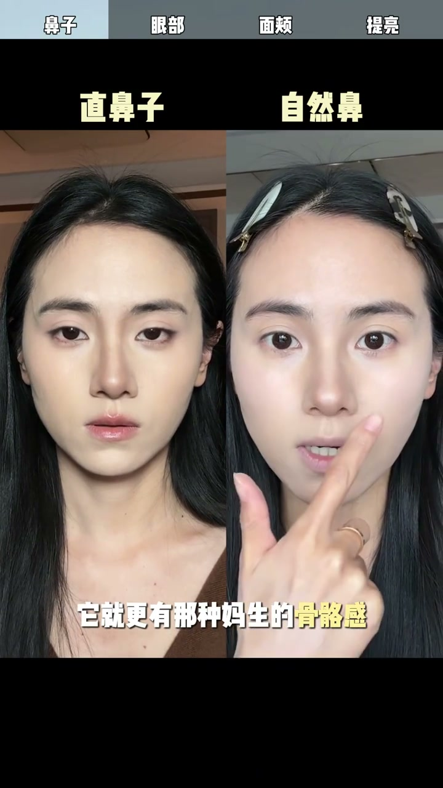
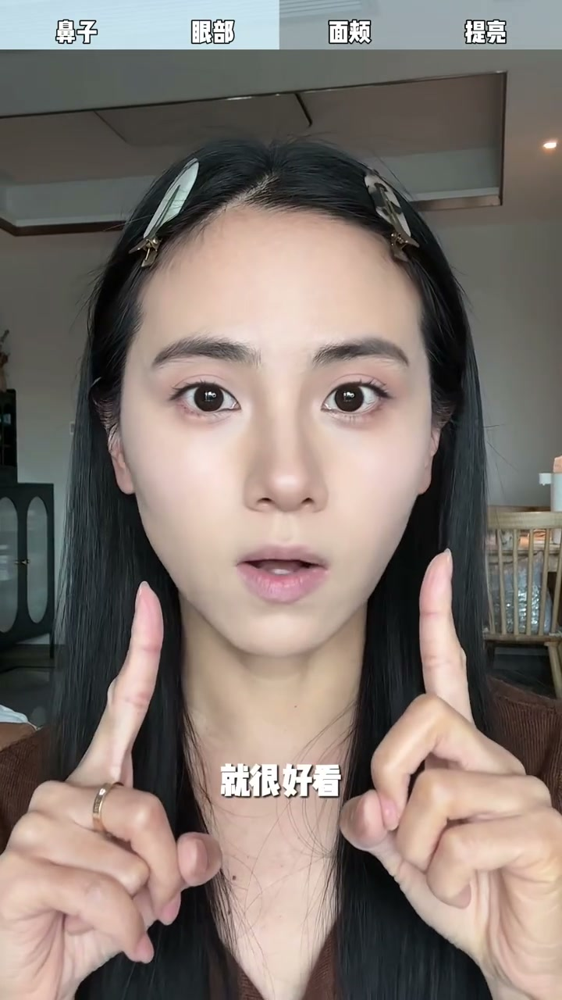
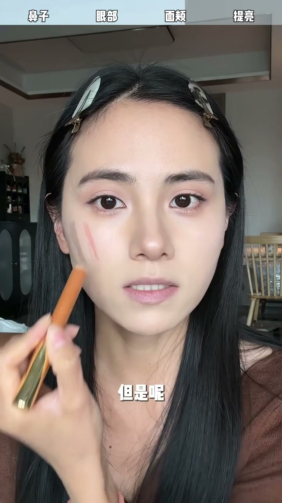
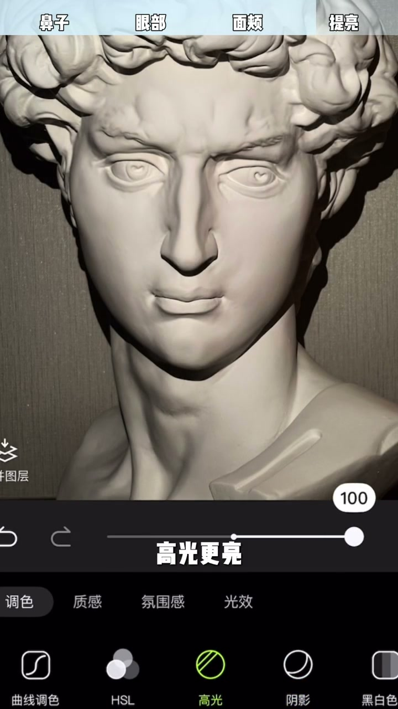
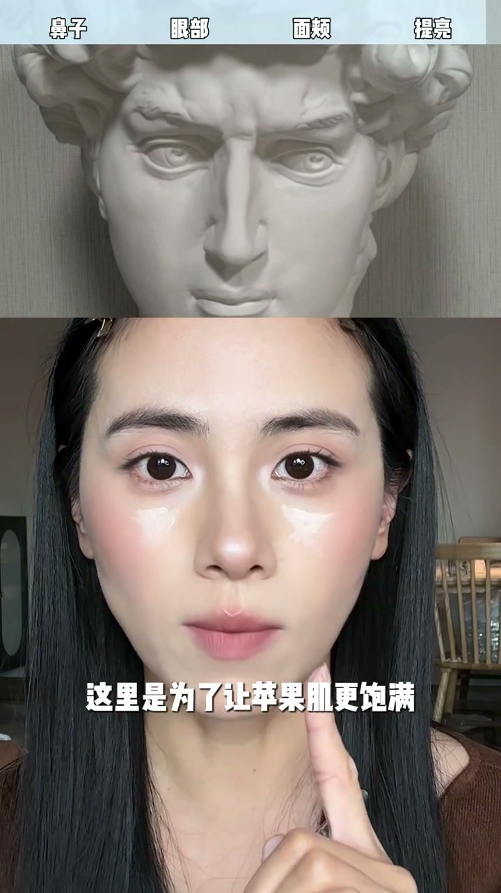

内容要点
[00:00] 有折叠 没折叠
[00:01] 有修容 没修容
[00:03] 新手花妆最怕最不敢下手的就是修容
[00:06] 怕画了险脏
[00:06] 但其实之所以会险脏
[00:08] 一个是因为你画错了位置
[00:09] 在本不该有阴影结构的地方你上阴影
[00:11] 第二个就是控制不好用量
[00:13] 下手太重
[00:14] 那这条视频呢为了让大家更清楚的知道
[00:16] 到底在哪里上阴影
[00:18] 哪里上高光
[00:18] 并且分别都是什么形状
[00:20] 咱们特邀了一位助教老师
[00:22] 利用光眼的变化
[00:23] 让你彻底搞清楚
[00:24] 并且找到最适合自己的修容位置
[00:27] ok 那现在就是一个刚上完粉底液的状态
[00:29] 有没有发现现在的脸还没有素颜的时候立体
[00:31] 变得又扁又坤
[00:32] 因为粉底液它会覆盖掉一些我们本身有的阴影结构
[00:36] 统一给你变成一张大白脸
[00:37] 所以呢即使是淡妆咱们也要修容
[00:39] 第一是把咱们被粉底液撫平的立体度给它还原回去
[00:42] 第二呢是调整比例修视五官和脸形
[00:45] 哎 那为什么要请助教老师呢
[00:46] 因为我骨骼更突出可以更直观的看清形状
[00:50] 咱们先来修鼻子
[00:51] 你们看
[00:51] 这是第一次看到如此心机的鼻鼓龙裤
[00:54] 它不是直线条就是有凹有凸的
[00:57] 所以如果你化成两条直直的阴影线
[00:59] 它就是会险葬险甲
[01:00] 鼻头上面是个巴
[01:01] 下面是个U
[01:03] 山根是个倒着的巴
[01:04] 鼻梁中间呢是个开口的灵形
[01:07] 这里注意一下哈
[01:08] 因为雕塑它是个男的
[01:09] 它这个山根的倒巴呢直接连到了眉头
[01:12] 但是我们女生呢不能这样
[01:13] 我们要连到眉毛的三分之一处
[01:15] 然后还有一个小tips
[01:16] 你看同一个鼻子
[01:17] 是不是这样就比这样
[01:18] 显得鼻子更短
[01:19] 区别呢在于鼻尖
[01:20] 鼻尖的U
[01:21] 弧度越大鼻子越长
[01:23] 弧度越平
[01:24] 鼻子越短
[01:24] 所以咱们在修的时候呢
[01:26] 就可以根据你自己的五官比例
[01:28] 去调整它的长短
[01:29] 然后我呢是因为想让大家更清楚的看到形状
[01:31] 所以今天用到的都会是高体的液体的
[01:34] 但是如果是新手的话
[01:35] 其实你们用稳状的会更好渊染一些
[01:38] 你看这样修出来的鼻子
[01:39] 它就更有那种妈生的骨骼感
[01:41] 它就更真实
[01:42] 而且侧面它并不会险葬
[01:43] 然后第二步呢就是来修眼部
[01:45] 就我之前那条眼妆公式
[01:47] 不是教你们在眼睛上画平行四边形吗
[01:49] 你看在这个雕塑上
[01:50] 平行四边形它巨像化了
[01:52] 从眼头到眉毛的三分之一
[01:54] 这个其实跟刚才比影是有重合的
[01:56] 然后到眉尾
[01:57] 再到臥残的最低点
[01:59] 回到眼头的平行四边形
[02:01] 这一步在实操的时候
[02:02] 不一定是非得用修容
[02:03] 你们可以用眼影盘里面的那个
[02:05] 浅色的小肿色
[02:06] 你要塑造出这个眼部轮廓
[02:08] 让眼睛深邃又立体
[02:09] 在这个基础上
[02:10] 画一个淡淡的眼妆就很好看
[02:12] 第三个修面夹
[02:13] 如果你脸宽脸方或者是全顾比较高
[02:16] 就一定要学会面夹的修容
[02:17] 新手修面夹
[02:18] 把修容上在正面就一定会险葬
[02:20] 因为这一块它就不该有险影
[02:22] 你只是人为给它夹了两黑面
[02:24] 那上在侧面又没有什么效果
[02:26] 关键点在于找到正侧面的转折区域
[02:29] 让明暗关系在这个转折区过渡自然
[02:32] 当我们化妆正面面对光源的时候
[02:34] 转折线在这里
[02:35] 把光向侧面移动45度
[02:37] 那转折线就内收到了这里
[02:39] 这两条线中间的区域
[02:40] 就决定了视觉上我们脸的宽窄
[02:42] 因为每个人的脸都不一样
[02:44] 你用这种打光的方式
[02:45] 就可以找到最适合自己的过渡区域
[02:47] 但是这一块
[02:48] 如果我们直接上修容的话
[02:50] 就很容易险脏
[02:51] 所以我们换成一个收缩色的腮红
[02:54] 拍开的时候一定要控制好范围
[02:56] 不要超过我们瞳孔的外边缘
[02:58] 然后侧面的区域就只需要少量的阴影
[03:01] 过渡一下就好了
[03:02] 然后下个角的位置
[03:03] 你贴着这个骨头去加深
[03:05] 剩下的鱼粉再稍微向上带过
[03:07] 这样又不会险脏
[03:08] 又能够有效修容
[03:09] 最后一步
[03:10] 实在是控制不好阴影的
[03:12] 咱们靠提亮
[03:12] 还是有请咱们的助教老师
[03:14] 当我把对比度拉高
[03:15] 也就是说让阴影更黑
[03:17] 高光更亮
[03:18] 它会更立体
[03:18] 但同时也容易险脏
[03:20] 那如果我们阴影不变
[03:21] 只让高光更亮
[03:22] 变立体的同时就不会险脏
[03:24] 所以呢
[03:25] 咱们就可以用少量的阴影
[03:26] 通过加强高光的方式
[03:28] 也能达到不错的修容效果
[03:29] 这个逻辑听明白了吗
[03:31] 是不是豁然开了
[03:32] 所以呢
[03:32] 咱们就对着助教老师
[03:33] 把明显亮面的位置
[03:35] 用雅光高光提亮
[03:39] 这里是为了让眉骨更立体
[03:42] 这里是为了让鼻子更挺
[03:46] 这里是为了让苹果肌更饱满
[03:49] 这是为了让下巴更翘
[03:51] 提不提亮
[03:52] 差别还是挺大的
[03:53] 如果以上这些
[03:54] 你都跟着我已经看明白了
[03:55] 那么圣人呢
[03:56] 就是要在练习中
[03:57] 去控制好阴影和高光的这个平衡
[04:00] 掌握好浓淡
[04:01] 这个真的只能靠大家
[04:02] 自己在练习中
[04:03] 去根据自己的脸形
[04:04] 去调整了
[04:05] 新手学修容号
[04:06] 就跟学自行车一样
[04:07] 如果你觉得有什么问题
[04:09] 学修容号就跟学自行车一样
[04:10] 如果你一直因为
[04:11] 担心睡觉而不去尝试的话
[04:13] 你真的永远都是一张大白脸
[04:15] 就永远都不会发觉到
[04:16] 自己更美的一面







